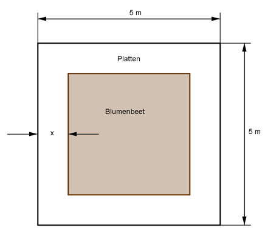

Aufgabe 123 Das Blumenbeet wird mit Platten umrandet. 1 m² Blumenbeet kostet 20 €, 1 m² Platten 17,50 €. Die Kosten für die Einfassung des Beetes von 5 € pro Meter hat der Bauherr angespart. Für welche Randbreite x sind die weiteren Kosten K am geringsten?  Gesamtfläche 5 m * 5 m = 25 m² Fläche des Blumenbeetes: B = (5 - 2x)(5 - 2x) = 25 - 20x + 4x2 Fläche der Plattenumrandung: Gesamtfläche - Blumenbeet Fläche der Plattenumrandung: P = 25 - (25 - 20x + 4x2) = -4x2 + 20x Umfang Blumenbeet: U = 4 * (5 - 2x) = 20 - 8x Kosten(x)> = B * 25 + P * 20 + U * 5 K(x) = 20(25 - 20x + 4x2) + 17,5(-4x2 + 20x) - 5(20 - 8x) K(x) = 500 - 400x + 80x2 - 70x2 + 350x - 100 + 40x K(x) = 10x2 - 10x + 400 Dies ist die Funktionsgleichung einer nach oben geöffneten, gestreckten Parabel, deren tiefster Punkt der Scheitelpunkt ist. K(x) = 10x2 - 10x + 400 |:10 K(x) ------ = x2 - x + 40 10 Quadratische Ergänzung: K(x) ------ = x2 - x + 0,25 - 0,25 + 40 10 mit x2 - x + 0,25 = (x - 0,5)2 K(x) ------ = (x - 0,5)2 + 39,75 |*10 10 K(x) = 10(x - 0,5)2 + 397,5 Scheitelpunkt abgelesen: S(0,5|397,5) Die Scheitelpunktkoordinaten bedeuten: Für eine Randbreite von x = 0,5 m sind die weiteren Kosten = 397,50 € am geringsten.